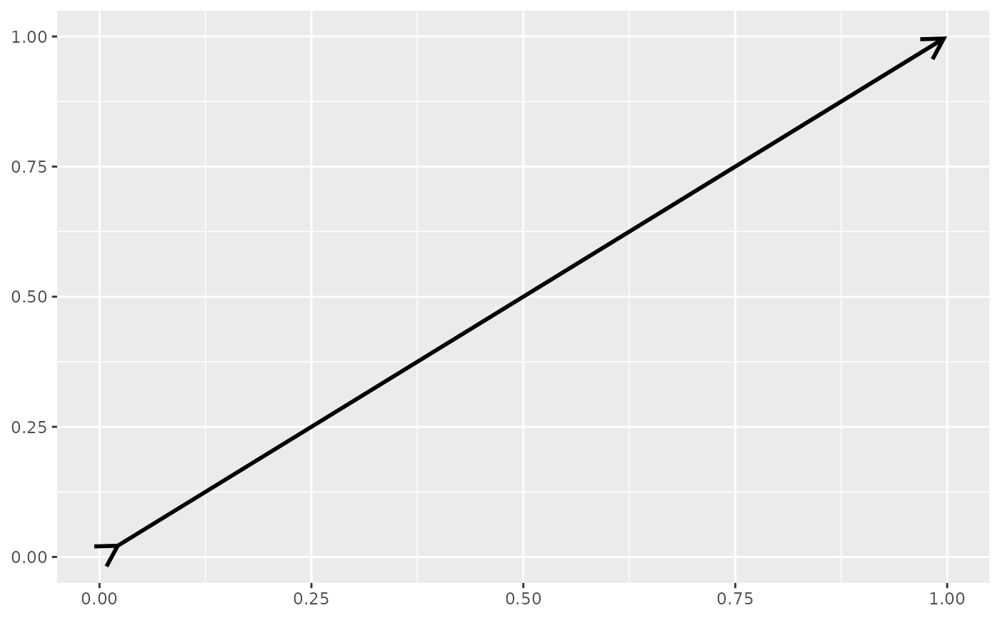

This function mirrors annotate() with the following
changes. First, the geom argument is pre-populated with "arrow". Second,
several parameters from ggarrow are special-cased, because no warning needs
to be issued when they don't have length 1.
Usage
annotate_arrow(
geom = "arrow",
x = NULL,
y = NULL,
xmin = NULL,
xmax = NULL,
ymin = NULL,
ymax = NULL,
xend = NULL,
yend = NULL,
...,
na.rm = FALSE
)Arguments
- geom
name of geom to use for annotation
- x, y, xmin, ymin, xmax, ymax, xend, yend
Positioning aesthetics. At least one of these must be specified.
- ...
Other arguments passed on to
layer()'sparamsargument. These arguments broadly fall into one of 4 categories below. Notably, further arguments to thepositionargument, or aesthetics that are required can not be passed through.... Unknown arguments that are not part of the 4 categories below are ignored.Static aesthetics that are not mapped to a scale, but are at a fixed value and apply to the layer as a whole. For example,
colour = "red"orlinewidth = 3. The geom's documentation has an Aesthetics section that lists the available options. The 'required' aesthetics cannot be passed on to theparams. Please note that while passing unmapped aesthetics as vectors is technically possible, the order and required length is not guaranteed to be parallel to the input data.When constructing a layer using a
stat_*()function, the...argument can be used to pass on parameters to thegeompart of the layer. An example of this isstat_density(geom = "area", outline.type = "both"). The geom's documentation lists which parameters it can accept.Inversely, when constructing a layer using a
geom_*()function, the...argument can be used to pass on parameters to thestatpart of the layer. An example of this isgeom_area(stat = "density", adjust = 0.5). The stat's documentation lists which parameters it can accept.The
key_glyphargument oflayer()may also be passed on through.... This can be one of the functions described as key glyphs, to change the display of the layer in the legend.
- na.rm
If
FALSE, the default, missing values are removed with a warning. IfTRUE, missing values are silently removed.
See also
Other arrow geoms:
geom_arrow(),
geom_arrow_chain(),
geom_arrow_curve(),
geom_arrow_segment()
Examples
# Annotate an arrow
ggplot() +
annotate_arrow(
x = c(0, 1), y = c(0, 1),
arrow_head = arrow_head_line(),
arrow_fins = arrow_fins_line(),
length_head = unit(5, "mm"),
length_fins = unit(5, "mm")
)

# Still works with other geoms as well
ggplot(mtcars, aes(x = wt, y = mpg)) + geom_point() +
annotate_arrow("text", x = 4, y = 25, label = "Some text")